Higgsfield Pilot Round · 57.9 Credits Reconciled (Out of 202.02 Available)
Unified Matte Grey Studio Stills & Realistic Tabletop Motion Pilot
Compare the Original Cleaned Maska Cut against Nano Banana Pro vs. Seedream 4.5 (unified dark-grey slate studio background, zero logos/badges) and Kling 3.0 Std vs. Seedance 1.5 Pro 720p (locked tabletop slider motion, zero food morphing). Approve the winning still + video recipe before we run all remaining products.
FULL CATALOGUE (45 / 45 READY) · NANO BANANA PRO + STYLE 2 ORBIT (ZERO ZOOM)
All Products — Unified Dark-Grey Studio Stills & Style 2 Orbit Animations
#517 · Poitrine de poulet désossée BBQ Montréal Boneless BBQ Montreal chicken breast · 5 paquets de 2 unités de +/- 2 kg#514 · Lanières de poulet Chicken strips · 6 paquets de 1 lb#511 · Rôti de longe de porc Pork loin roast · 2 rôti de 1 kg#509 · Lanières de porc Pork strips · 6 paquets de 1 lb#507 · Grillades Style Valleyfield Valleyfield-style grillades · 4 paquets de 1 lb#505 · Porc en cube Diced pork · 6 paquets de 1 lb#500 · Côtes levées coupées crues Raw cut pork ribs · 1 paquet de 2 kg
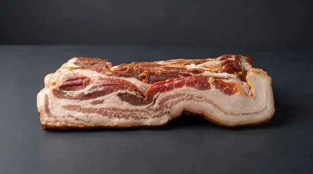
#486 · Bacon Bacon · 1 boîte de 5 kg#472 · Poulet en cube Diced chicken · 6 paquets de 1 lb#470 · Saucisses tout bœuf maison Homemade all-beef sausages · 2 paquets de 12 unités
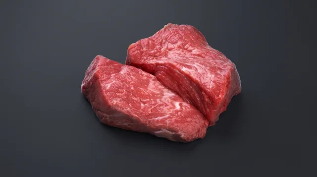
#468 · Poire de bœuf pour tartare Beef for tartare · 2 poires de 1 lb
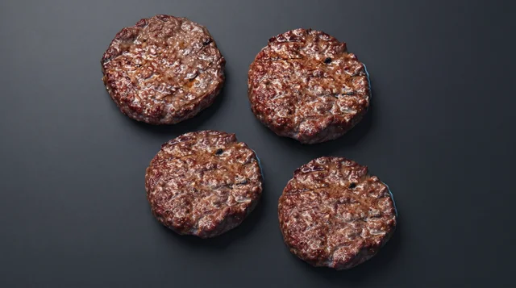
#465 · Galettes de bœuf pour burgers Beef burger patties · 1 boite de 50 unités de 3 oz
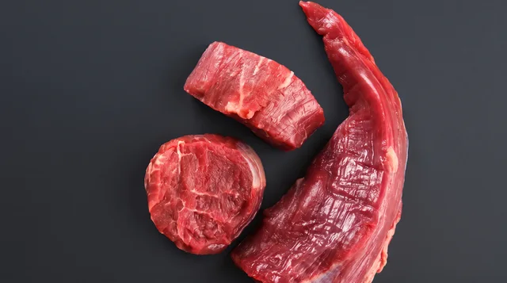
#462 · Filet mignon de bœuf Beef filet mignon · 2 paquets de 2 unités de 8 oz#461 · Bavette de bœuf Marinée aux tomates et basilic Tomato and basil marinated beef flap meat · Paquet de 6 unités de 6 oz
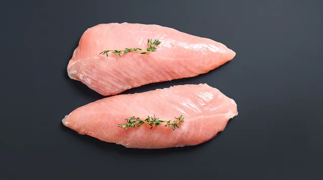
#458 · Poitrine de poulet désossée Boneless chicken breast · Boîte de 4 kg (entre 15 et 20 poitrines)
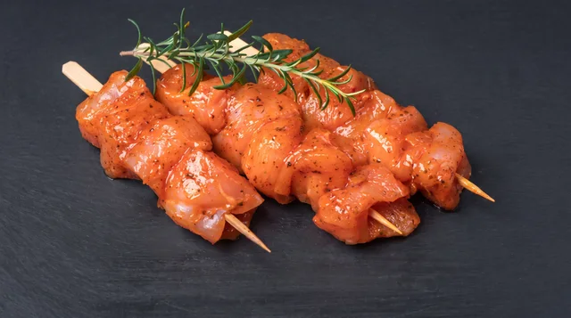
#455 · Souvlaki de poulet mariné Marinated chicken souvlaki · 15 unités de 120 g par bâton
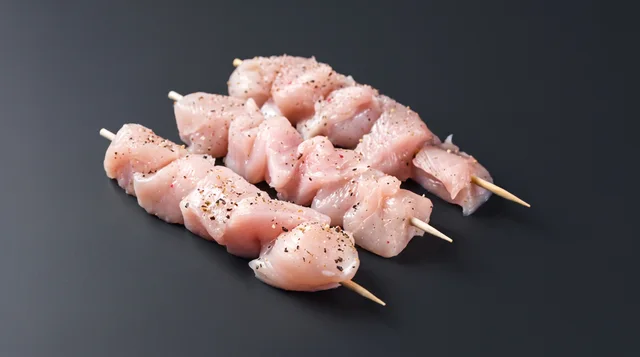
#452 · Souvlaki de poulet nature Plain chicken souvlaki · 15 unités de 120 g par bâton
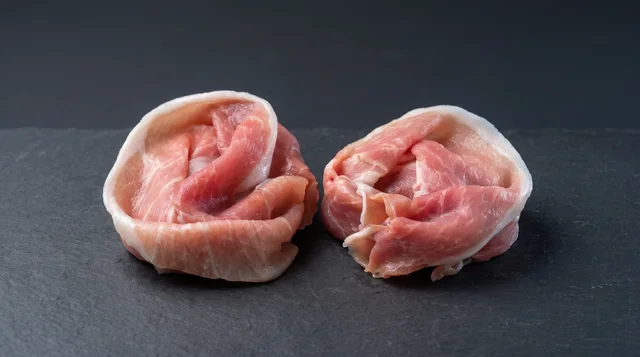
#414 · Fondue chinoise de porc Pork for Chinese fondue · 8 paquets de 1/2 lb
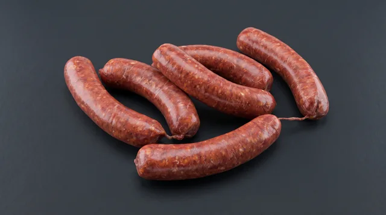
#400 · Saucisses italiennes Italian sausages · 2 paquets de 5 unités
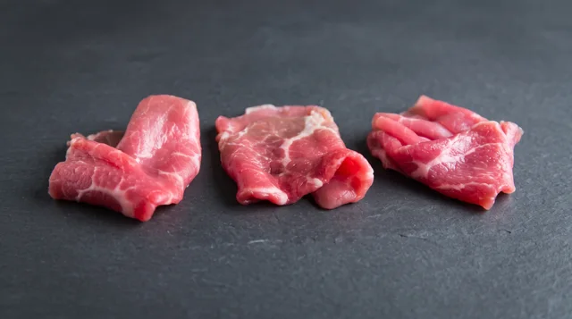
#397 · Fondue chinoise de bœuf Beef for Chinese fondue · 8 paquets de 1/2 lb
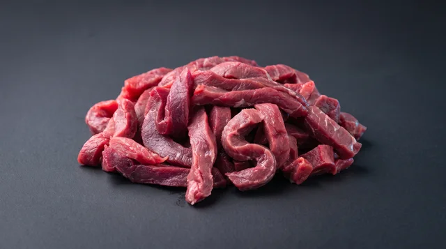
#395 · Lanières de bœuf Beef strips · 6 paquets de 1 lb
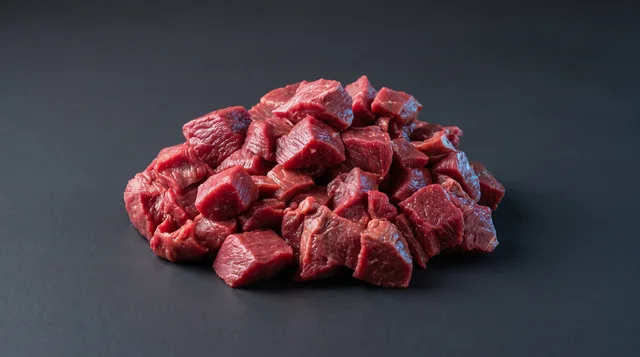
#391 · Cubes de bœuf Beef cubes · 6 paquets de 1 lb
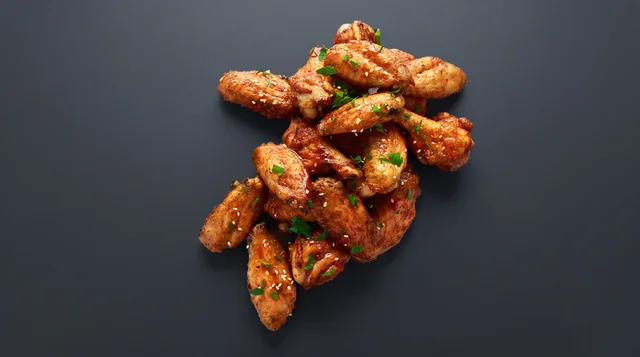
#355 · Ailes de poulet cuites Cooked chicken wings · Sac de 2 kg
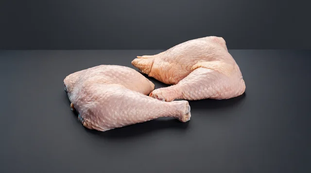
#349 · Cuisses de poulet Chicken thighs · 5 kg par boite
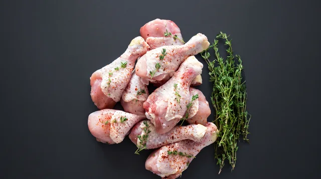
#345 · Pilons de poulet Chicken drumsticks · 5 kg par boite
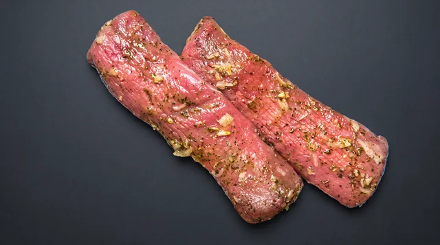
#339 · Filet de porc mariné Marinated pork tenderloin · 2 paquets de 2 demi unités de ±250 gr (dans un sac, il y a 1 filet de porc coupé en 2)
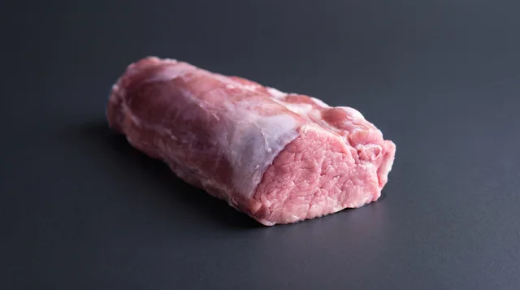
#336 · Filet de porc Pork tenderloin · 2 paquets de 2 unités de ±1 lb/unité
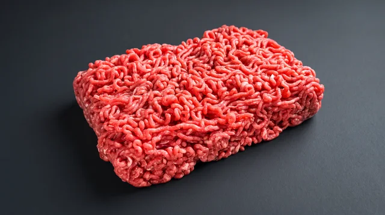
#324 · Bœuf haché maigre Lean ground beef · Vacuum-packed and frozen, in 1 lb or 2 lb packs
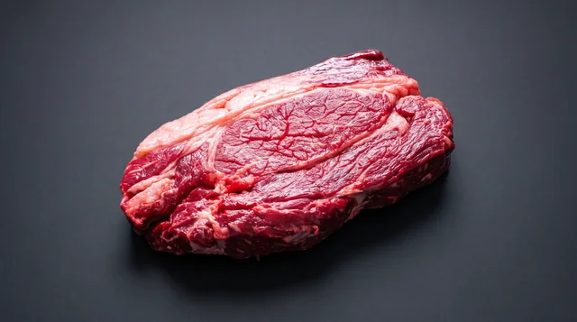
#322 · Rôti de Palette désossée Boneless blade roast · 2 unités de 1 kg
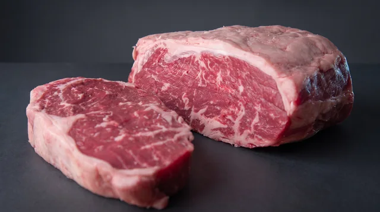
#320 · Rôti de contrefilet Strip loin roast · 2 unités de 1 kg
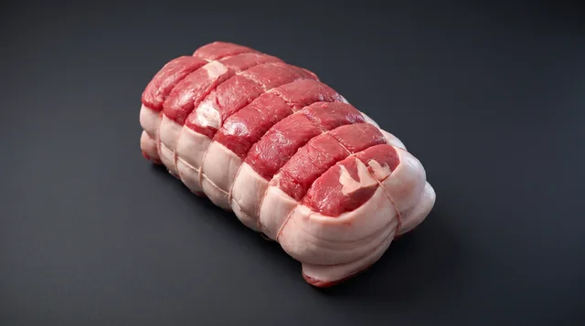
#318 · Rôti du Roi avec barde Rôti du Roi with barding · 2 unités de 1 kg
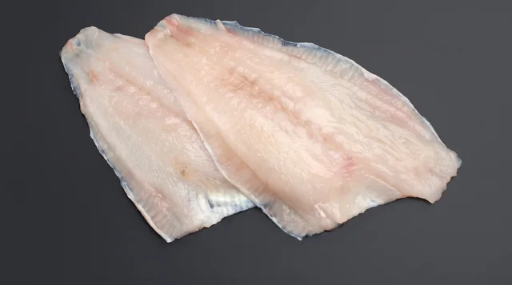
#309 · Filets de sole Sole fillets · 40 portions de 4 oz
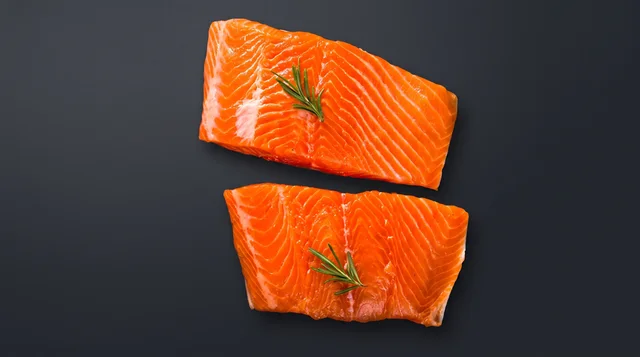
#306 · Saumon Salmon · 40 portions de 4 oz
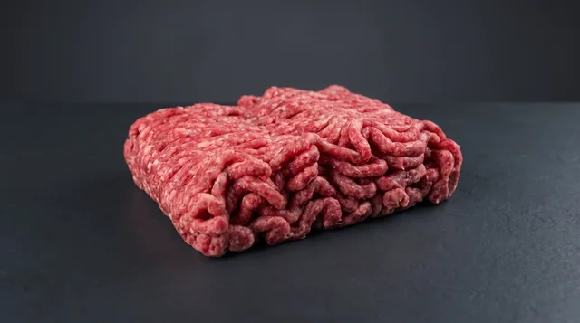
#301 · Porc et bœuf haché Ground pork and beef · Vacuum-packed and frozen, in 1 lb or 2 lb packs
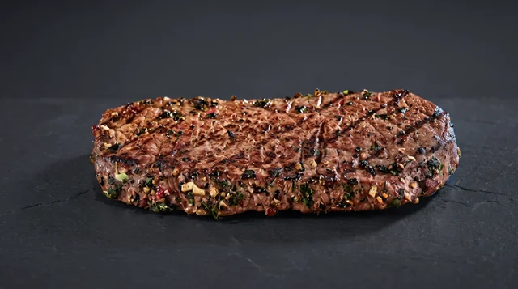
#296 · Steak Maska Mariné Marinated Maska steak · Individually vacuum-packed and frozen; 6 oz or 8 oz
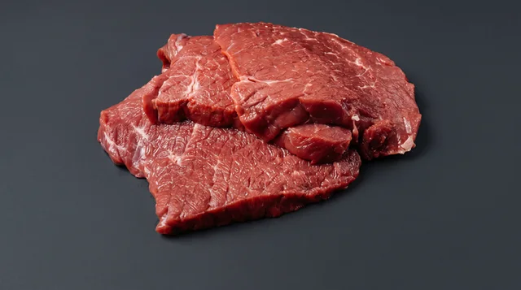
#291 · Steak Maska Nature Plain Maska steak · Individually vacuum-packed and frozen; 6 oz or 8 oz
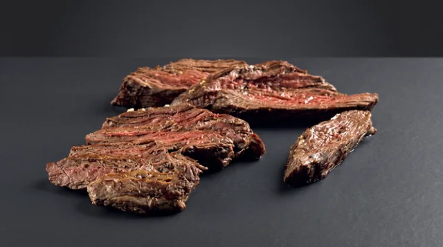
#288 · Bavette de bœuf Marinée aux 3 poivres Three-pepper marinated beef flap meat · Paquet de 6 unités de 6 oz
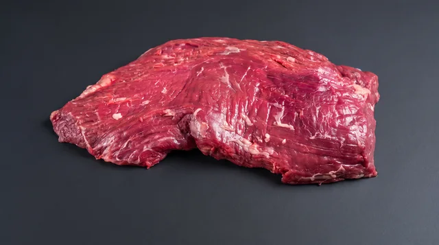
#285 · Bavette de bœuf Nature Plain beef flap meat · Paquet de 6 unités de 6 oz
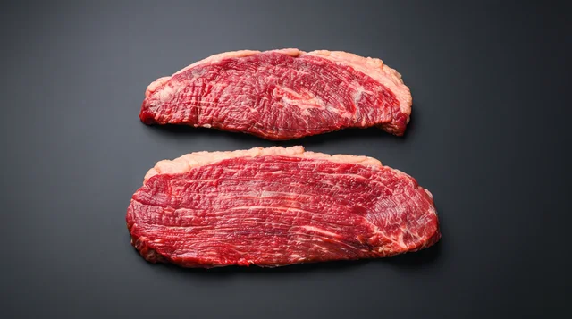
#273 · Steak de haut de surlonge Top sirloin steak · Individually packed and frozen
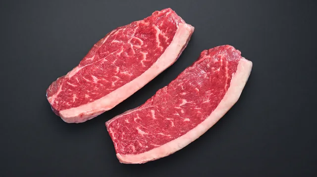
#270 · Steak de Picanha Picanha steak · Paquet de 4 unités de 8 oz#265 · Côte de bœuf AA AA rib steak · Paquet de 6 unités de 14 oz
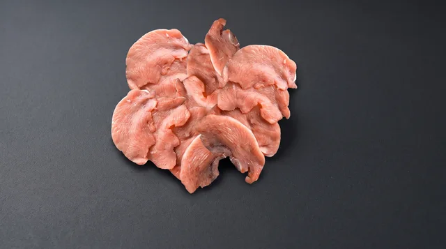
#251 · Fondue chinoise de poulet Chicken for Chinese fondue · 8 paquets de 1/2 lb
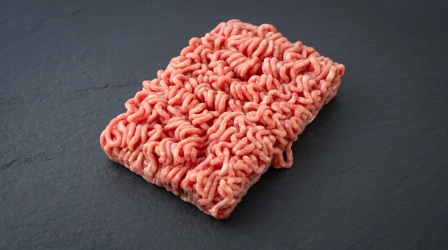
#247 · Veau haché Ground veal · Vacuum-packed and frozen, in 1 lb packs
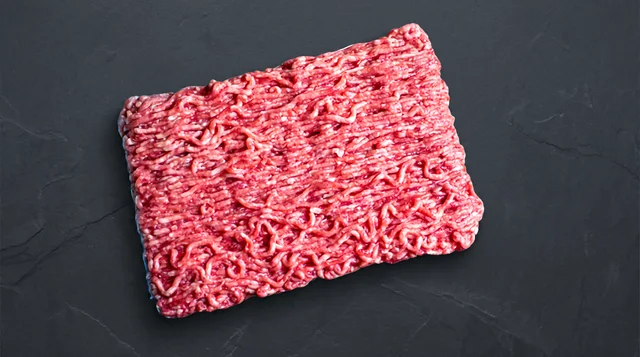
#242 · Porc haché Ground pork · Vacuum-packed and frozen, in 1 lb or 2 lb packs
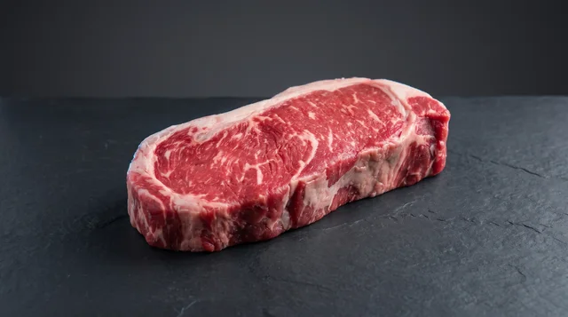
#227 · Contrefilet de bœuf AA AA striploin · Pack of 6 units of 8 oz or 12 oz
ROUND 2 / NON-ZOOM MOTION STYLES SHOWCASE ON NANO BANANA PRO GREY STILLS
Every clip below starts from your approved Nano Banana Pro unified dark-grey studio stills with ZERO camera zoom-in. Compare pure motorized turntable rotation, fixed-distance 3D camera orbit, locked-camera overhead softbox light sweep, and parallel lateral slider glide:
Style 1: Pure Motorized Turntable Rotation (Zero Zoom) — Rib Steak AA (3 cr Pro) Fixed-focal-length tripod shot with ZERO camera zoom: the raw marbled beef rib steak rotates smoothly and slowly clockwise on a hidden motorized studio turntable at a constant speed (25 degrees smooth rotation). The camera does not zoom in or push in at all. The steak stays 100% rigid and solid while overhead studio softbox reflections glide naturally across the marbling and coarse sea salt on the matte dark-grey background. Zero morphing, zero smoke. Job 88a8260c · SHA feb76613419c05caStyle 2: Fixed-Distance Horizontal Camera Arc / Orbit (Zero Zoom) — Rib Steak AA (3 cr Pro) Fixed-distance studio camera rig: the camera orbits horizontally in a smooth 25-degree circular arc around the raw marbled beef rib steak at a strictly constant distance with ZERO zoom-in. The steak remains 100% rigid and solid on the dark-grey surface while the horizontal angle shifts smoothly, revealing the 3D thickness of the fat cap and natural studio rim light. Zero zoom, zero morphing. Job f753114f · SHA 868f58e80d189070Style 3: Locked Camera + Overhead Studio Softbox Light Sweep (Zero Zoom) — Rib Steak AA (3 cr Pro) 100% locked-off tripod camera (zero zoom, zero pan) and 100% stationary raw marbled beef rib steak on the matte dark-grey slate surface. An overhead studio key light sweeps slowly from left to right, making the natural moisture, marbling, and sea salt crystals catch moving specular highlights and casting a soft shifting shadow across the dark grey surface. Zero camera zoom, zero meat movement, zero morphing. Job 791f0caa · SHA 2da0708ecb39624aStyle 1B: Pure Motorized Turntable Rotation (Zero Zoom) — Marinated Beef Bavette (3 cr Pro) Fixed-focal-length tripod shot with ZERO camera zoom: the sliced marinated beef bavette rotates slowly and smoothly clockwise on a motorized studio turntable at a constant distance from the camera. The camera does not zoom in. Natural studio softbox highlights roll across the glossy marinade glaze as the rigid cut rotates smoothly on the dark-grey slate surface. Zero morphing, zero smoke. Job 0de997cd · SHA e61dbab573cf3247Style 1C: Pure Motorized Turntable Rotation (Zero Zoom) — Chicken Breast Strips (3 cr Pro) Fixed-focal-length tripod shot with ZERO camera zoom: the fresh raw chicken breast strips with rosemary sprigs rotate slowly and smoothly clockwise on a motorized studio turntable at a constant distance. The camera stays completely locked with no zoom-in while soft cold-room studio light reflects across the moist poultry surface. Zero deformation, zero morphing. Job d5cbe914 · SHA 14acfc9adf53e95eStyle 4: Fixed-Distance Lateral Parallel Slider Glide (Zero Zoom) — Smoked Bacon (3 cr Pro) Motorized studio camera slider trucks horizontally from left to right parallel to the thick-cut smoked bacon at a strictly constant distance with ZERO zoom-in. The bacon remains 100% rigid and stationary on the matte dark-grey surface while the lateral camera movement and shifting studio rim light showcase the cured meat and white fat layers. Zero zoom, zero morphing. Job 1968ea62 · SHA 6b61aa5a5bebef3fStyle 1D: Overhead Turntable Rotation (Zero Zoom) — Atlantic Salmon Fillets (3 cr Pro) Locked overhead tripod camera with ZERO zoom: the two fresh raw Atlantic salmon fillets rotate slowly and smoothly clockwise on a matte dark-grey studio turntable at a fixed camera distance. Soft overhead studio light gleams across the orange flesh and white fat striations as the fillets rotate rigidly as a single unit. Zero zoom, zero morphing. Job 046c9571 · SHA e1bcd7f77f72b98dStyle 1 (Seedance 1.5 Pro 720p Comparison): Pure Turntable Rotation (Zero Zoom) — Rib Steak AA (2.4 cr Pro) Fixed tripod camera with ZERO zoom: the raw marbled beef rib steak rotates slowly and smoothly clockwise on a motorized studio turntable at a fixed distance. The camera does not zoom in. Studio softbox light reflects across the marbling on the matte dark-grey background. Rigid steak, zero morphing. Job 2373353c · SHA 2d123e723fac93b8
A / PRODUCT #265 · UNIFIED GREY STUDIO + REALISTIC MOTION PILOT
Bifteck de côte AA (Rib Steak AA)
Still Prompt: Ultra-realistic commercial butcher studio product photo of the exact raw marbled beef rib steak from the reference image, resting flat on a seamless dark-grey brushed architectural slate surface (#232830). Soft diffused overhead studio softbox light and subtle cool rim light. Keep the exact cut shape, fat cap, and meat marbling unchanged. Clean minimal grey background, no props, no hands, no flames, no smoke, no text, no logos, no badges. Motion Prompt: Locked-off macro cinema camera on a motorized slider: slow, steady 4-degree camera push-in over the raw marbled beef rib steak on the matte grey slate surface while a soft studio key light gently shifts across the natural meat grain. The steak remains 100% solid, rigid, and stationary on the surface with zero deformation, zero morphing, zero smoke, zero steam, and zero logos.
B / PRODUCT #461 · UNIFIED GREY STUDIO + REALISTIC MOTION PILOT
Bavette de bœuf marinée (Marinated Beef Bavette)
Still Prompt: Ultra-realistic commercial studio food photo of the exact marinated beef bavette cut from the reference image, placed on a unified seamless matte dark-grey architectural stone surface (#232830). Crisp directional studio lighting highlighting the natural surface glaze and meat fibers. Clean minimal grey background, no text, no logos, no badges. Motion Prompt: Motorized tabletop camera slider: slow, smooth horizontal parallax glide past the marinated beef bavette on the matte grey stone surface as soft studio specular highlights roll across the glaze. The meat remains 100% rigid and stationary with zero morphing, zero bubbling, zero smoke, and zero logos.
C / PRODUCT #306 · UNIFIED GREY STUDIO + REALISTIC MOTION PILOT
Filet de saumon (Atlantic Salmon Fillets)
Still Prompt: Ultra-realistic commercial seafood studio photo of the exact fresh raw Atlantic salmon fillets from the reference image, resting on a unified seamless matte dark-grey architectural slate surface (#232830). Soft overhead studio softbox lighting catching the natural white fat striations and moist orange flesh. Clean minimal grey background, no text, no logos, no badges. Motion Prompt: Motorized macro camera slider: slow, controlled 4-degree push-in toward the fresh raw Atlantic salmon fillets on the matte grey slate surface while a soft studio light reflection glides across the moist fish grain. The fillets stay 100% still and solid with zero movement, zero morphing, zero steam, and zero logos.
D / PRODUCT #514 · UNIFIED GREY STUDIO + REALISTIC MOTION PILOT
Lanières de poitrine de poulet (Chicken Breast Strips)
Still Prompt: Ultra-realistic commercial butcher studio photo of the exact fresh raw chicken breast strips from the reference image, arranged cleanly on a unified seamless matte dark-grey architectural slate surface (#232830). Crisp cold-room studio softbox lighting showing natural poultry texture. Clean minimal grey background, no text, no logos, no badges. Motion Prompt: Motorized tabletop camera slider: slow, steady overhead dolly across the fresh raw chicken breast strips on the matte grey slate surface with subtle studio rim light shift. The chicken strips remain 100% stationary and rigid with zero deformation, zero morphing, zero steam, and zero logos.
E / PRODUCT #486 · UNIFIED GREY STUDIO + REALISTIC MOTION PILOT
Bacon fumé tranché (Sliced Smoked Bacon)
Still Prompt: Ultra-realistic commercial butcher studio photo of the exact thick-cut smoked bacon slices from the reference image, laid flat on a unified seamless matte dark-grey architectural slate surface (#232830). Soft directional studio lighting revealing the natural cured meat and white fat layers. Clean minimal grey background, no text, no logos, no badges. Motion Prompt: Motorized macro camera slider: slow, smooth camera glide along the thick-cut smoked bacon slices on the matte grey slate surface as soft studio light catches the natural marbling. The bacon slices remain 100% flat, solid, and stationary with zero curling, zero morphing, zero smoke, and zero logos.